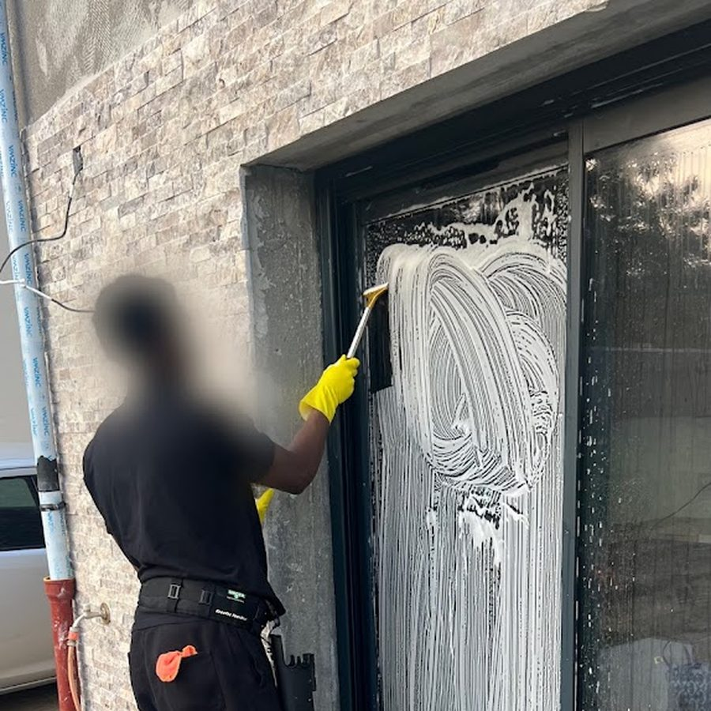

Lavage de vitres et de vitrines à Paris, 92, 95 et 78
Le Béret Nettoyeur lave vos vitres à Paris intra-muros et dans les Hauts-de-Seine, le Val-d’Oise et les Yvelines : vitrines de commerce, baies d’immeubles de bureaux, verrières et fenêtres de toit. Résultat sans trace, y compris en hauteur.
-
Devis gratuit sous 24 h ouvrées
-
Entreprise assurée en responsabilité civile professionnelle
-
Noté 5,0 sur 5 par nos clients sur Google

Pourquoi confier vos vitres au Béret Nettoyeur
Une vitre propre se juge à contre-jour, sur les bords et sur les angles.
Des vitres nettes, bords et angles compris
Le lavage se fait en passes croisées, en reprenant toute zone qui laisse une marque. Nous reprenons ensuite les quatre bords et les angles à la microfibre, et nous essuyons les rebords et le bas de vitre : c'est exactement là que se repèrent les coulures d'un travail bâclé.
Les vitres hautes lavées depuis le sol
Selon la configuration, les vitrines hautes, les grandes baies et les toitures de véranda sont lavées depuis le sol. Cela évite aussi d'appuyer une échelle contre une menuiserie ou une devanture.
Le bon produit sur le bon support
Solution douce et faiblement dosée sur le verre, produits non abrasifs sur les menuiseries PVC, aluminium laqué et bois peint, rinçage soigné des joints et des rainures d'écoulement. Les dépôts collés (résine, fientes, laitance de ciment, restes d'adhésif) sont ramollis puis retirés au produit adapté, jamais au grattoir sur un vitrage traité ou anti-reflet.
Une intervention qui s'organise autour de vous
Nous intervenons du lundi au samedi, de 9 h à 19 h, sur un créneau convenu à l'avance : passage ponctuel, ou entretien régulier pour une vitrine de centre-ville qui s'encrasse vite. Le matériel reste compact et l'intervention ne bloque ni votre entrée, ni la circulation de vos clients.
Une entreprise locale et assurée, notée 5/5
Le Béret Nettoyeur est installé rue des Tournelles à Versailles et intervient à Paris intra-muros ainsi que dans les Hauts-de-Seine, le Val-d’Oise et les Yvelines. L'entreprise est assurée en responsabilité civile professionnelle et affiche 5,0/5 sur 17 avis Google. Le devis est gratuit et vous parvient sous 24 h ouvrées.
Les surfaces vitrées que nous lavons
Du simple carreau à la toiture de véranda.
Notre méthode de lavage, étape par étape
Un ordre de passage qui évite les coulures.
Le point sur vos vitres et le devis
Vous appelez le 06 99 01 12 57 ou vous écrivez à leberetnettoyeur@gmail.com. Nous faisons le point : nombre et type de vitrages, accès (rez-de-chaussée, étage, cour, toiture de véranda), état des surfaces et fréquence souhaitée. Tarif sur devis personnalisé selon la surface, devis gratuit sous 24 h ouvrées.
Protection et préparation des supports
Avant de commencer, nous protégeons les sols, les appuis et le mobilier proche. Les châssis, rainures et joints sont dépoussiérés à sec : un encadrement encrassé relargue ses salissures sur une vitre tout juste lavée. Les dépôts collés sont ramollis en amont pour être retirés sans rayer le verre.
Lavage des deux faces
Application de la solution adaptée au support, puis raclage en continu, puis reprise des bords et des angles à la microfibre. Les surfaces hautes accessibles sont traitées depuis le sol. Sur véranda, verrière et fenêtre de toit, nous travaillons depuis un appui stable et du haut vers le bas, pour ne jamais resalir une surface déjà traitée.
Contrôle à contre-jour et remise en ordre
Chaque vitre est vérifiée à contre-jour, côté intérieur comme extérieur, et reprise si besoin. Les rebords sont essuyés, les protections retirées, les lieux rendus en ordre. Vous validez le résultat avec nous avant notre départ, et nous fixons le passage suivant si vous souhaitez un entretien régulier.
Questions fréquentes sur le lavage de vitres
Une question qui n’est pas là ? Appelez-nous au 06 99 01 12 57, du lundi au samedi de 9 h à 19 h.
Lavez-vous les vitres à l'intérieur comme à l'extérieur ?
Oui, sauf demande contraire nous lavons les deux faces : une vitre propre d'un seul côté reste grise à contre-jour. Les encadrements, rainures, appuis et joints sont compris, ainsi que le bas de vitre où se logent les coulures. Indiquez-nous simplement les pièces qui seront accessibles le jour du rendez-vous.
Jusqu'à quelle hauteur intervenez-vous ? Et pour une véranda ou une fenêtre de toit ?
Nous lavons depuis le sol quand la configuration le permet, et depuis un appui stable pour le reste. Les toitures de véranda, verrières et fenêtres de toit sont traitées lorsque l'accès est sécurisé, avec un rinçage abondant pour éviter les dépôts dans les rainures d'écoulement. Si votre configuration impose une nacelle ou un travail sur corde, nous vous le disons dès le devis plutôt que de prendre un risque.
Combien coûte un lavage de vitres ou de vitrines ?
Sur devis personnalisé selon la surface vitrée, la hauteur et l'accessibilité. Une vitrine de commerce en rez-de-chaussée lavée chaque semaine et une façade vitrée d'immeuble de bureaux nettoyée deux fois par an ne relèvent ni du même matériel ni de la même organisation. Le devis est gratuit et vous parvient sous 24 h ouvrées après visite ou envoi de photos.
À quelle fréquence faut-il faire laver ses vitres ?
Tout dépend de l'exposition. Une vitrine sur rue passante, un logement proche d'un axe routier ou d'arbres se salit vite et gagne à un passage régulier ; des fenêtres abritées tiennent plus longtemps, souvent d'une saison à l'autre. Et non, la pluie ne relave pas les vitres : elle dépose de la poussière qui sèche en traces sur un vitrage déjà encrassé.
Demandez votre devis gratuit au 06 99 01 12 57
Décrivez-nous votre besoin, ou envoyez-nous simplement des photos par SMS. Tarif sur devis personnalisé selon la surface, réponse sous 24 h ouvrées.